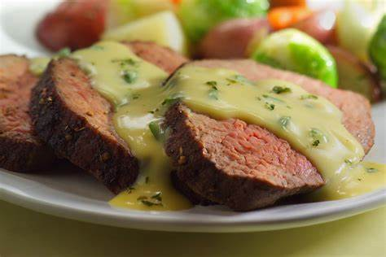

How to make Bernaise sauce
Bernaise sauce is a creamy, buttery French sauce. It's a very simple recipe that anyone can learn. Bernaise is adaptable to use on any dish, but it is mainly used on steak.

Ingredients
- ¼ cup (60 ml) white wine vinegar
- ½ cup (125 ml) white wine
- 2 shallots, chopped
- 1 sprig fresh tarragon
- 4 egg yolks
- ¾ cup (180 ml) butter, melted and cooled
- 1 tablespoon (15 ml) chopped fresh tarragon
- Salt and pepper
Cooking!
- In a saucepan, bring the vinegar and wine to a boil 100°C with the shallots and tarragon sprig. Season with pepper. Reduce until only about 45 ml (3 tablespoons) of liquid remains. Strain.
- In a bowl over a saucepan of simmering water, with a whisk, beat the vinegar reduction and egg yolks until thick and foamy.
- Remove from the double boiler. Off the heat, drizzle in the butter, whisking constantly. Add the chopped tarragon. Adjust the seasoning. If the sauce seems too thick, whisk in a little hot water. Keep at room temperature and just before serving, place back on the double boiler, whisking for just a few seconds, to warm it up.